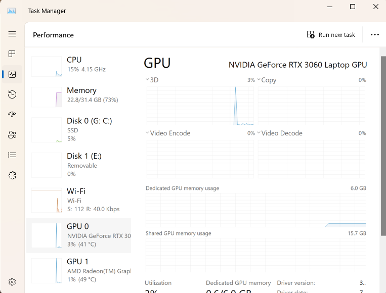
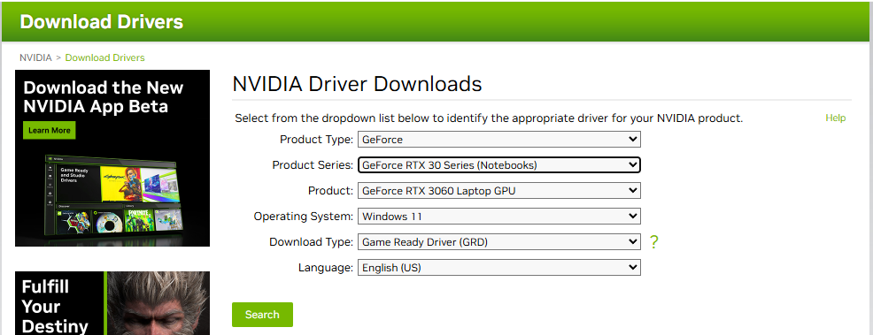
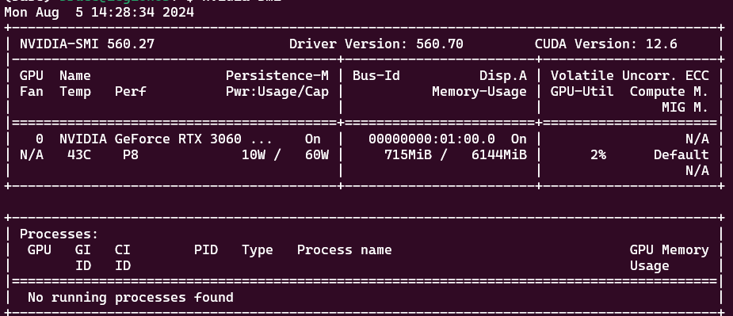

Install NVIDIA GPU display driver
In this article, learn how to set up your Windows laptop or desktop, using Windows Subsystem for Linux (WSL). You will also set up your graphics card to develop your machine learning application on your NVIDIA GPU.
Definition
- GPU is an abbreviation for graphics processing unit
- CUDA is a proprietary parallel computing platform and application programming interface (API) for software to use certain types of graphics processing units (GPUs) for accelerated general-purpose processing. CUDA is designed to work with programming languages such as C, C++, Fortran and Python.
Prerequisites
You will need:
- Laptop or desktop development computer with an NVIDIA GPU. See how to check the GPU hardware in the following step.
- Ensure you are running Windows 11 or Windows 10, version 21H2 or higher.
Find out your GPU
Your computer’s GPU, or , helps your PC or laptop handle visuals like graphics and videos.
Windows Task Manager, System Information, PowerShell, and DxDiag are built-in tools to check your GPU on Windows.
Start Task Manager from your start menu. Click Performance tab. You can see the GPUs installed on your computer.

You may have more than one display.
For gamers: if you have multiple GPUs in your system — for example, as in a laptop with a low-power Intel GPU for use on battery power and a high-power NVIDIA GPU for use while plugged in and gaming — you can control which GPU a game uses from Windows 10's Settings app. These controls are also built into the NVIDIA Control Panel.
You can also check by running PowerShell command:
Get-CimInstance win32_VideoController
You will need to know the GPU information to select the right driver for your computer.
Install the GPU Driver
Download and install the NVIDIA CUDA enabled driver for WSL to use with your existing CUDA ML workflows.

For more info about which driver to install, see:
Install or Update WSL 2
Launch your preferred Windows Terminal / Command Prompt / Powershell and install WSL:
wsl.exe --install
Ensure you have the latest WSL kernel:
wsl.exe --update
Start WSL
From a Windows terminal, enter WSL:
C:\> wsl.exe
Test the driver installation
To test the driver installation:
nvidia-smi -L
Returns something similar to:
GPU 0: NVIDIA GeForce RTX 3060 Laptop GPU (UUID: GPU-fbeb177f-f196-93e0-b215-12b7c899dc82)
OR for more fun
nvidia-smi
to see:

Test your Docker container
You will need to have set up Docker. Run this command to start your GPU with NVIDIA NGC TensorFlow container.
docker run --gpus all -it --shm-size=1g --ulimit memlock=-1 --ulimit stack=67108864 nvcr.io/nvidia/tensorflow:20.03-tf2-py3
Try a pre-trained model
Pull the Tensorflow Docker image:
docker pull tensorflow/tensorflow:latest-gpu-jupyter
docker run -it --rm -p 8888:8888 docker pull tensorflow/tensorflow:latest-gpu-jupyter
Start jupyter somehow.
Run GPU-enabled image
lspci | grep -i nvidia
docker run --gpus all -it --rm tensorflow/tensorflow:latest-gpu \
python -c "import tensorflow as tf; print(tf.reduce_sum(tf.random.normal([1000, 1000])))"
Install cuDNN Library
cuDNN (CUDA Deep Neural Network) is a library developed by NVIDIA that provides optimized primitives for deep neural networks. It can significantly speed up the training and inference of deep learning models on GPUs. To use cuDNN with Jupyter Notebook, you need to download and install the cuDNN library from NVIDIA’s website: https://developer.nvidia.com/cudnn.

Next steps
See: - NVIDIA CUDA on WSL User Guide - Start using your exisiting Linux workflows through NVIDIA Docker, or by installing PyTorch or TensorFlow inside WSL. - Set up Jupyter Notebook - Set up for Docker - Set up for Podman
References
See:
- Getting Started with CUDA on WSL 2
- How to Check What Graphics Card (GPU) Is in Your PC
- Enable NVIDIA CUDA on WSL
- Red Hat documentation: Installing Podman and the NVIDIA Container Toolkit
- Get started with GPU acceleration for ML in WSL
Video: